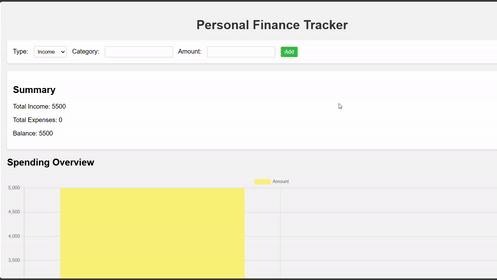
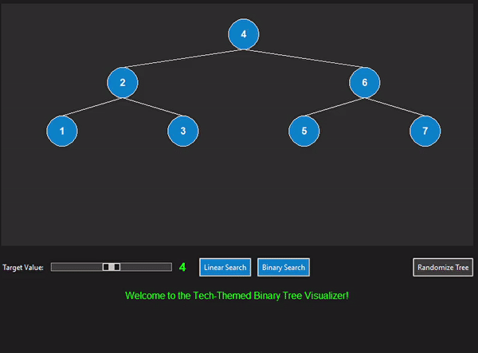

Developed a personal finance application designed to help users track income, monitor expenses, and set financial goals. The application was coded in Python, JavaScript, and CSS using Microsoft Visual Studio Code. Key features include data visualization, budget creation, and categorization of income and expenses. Additionally, a responsive user interface was developed to enhance user experience and accessibility across devices.
An Algorithm Visualizer was developed to visualize data structures, including trees and dictionaries. The application was created using the Python programming language and employed Tkinter for the graphical user interface elements. Through algorithm optimization, data processing efficiency was improved by 20%, enhancing the overall performance and user experience of the visualizer.
An intelligent chatting system with capabilities akin to modern messaging platforms was developed. The system was coded in Python, JavaScript, and CSS using Microsoft Visual Studio Code. Natural language processing was implemented for accurate text interpretation and responses, and advanced chat libraries were integrated to enhance functionality.